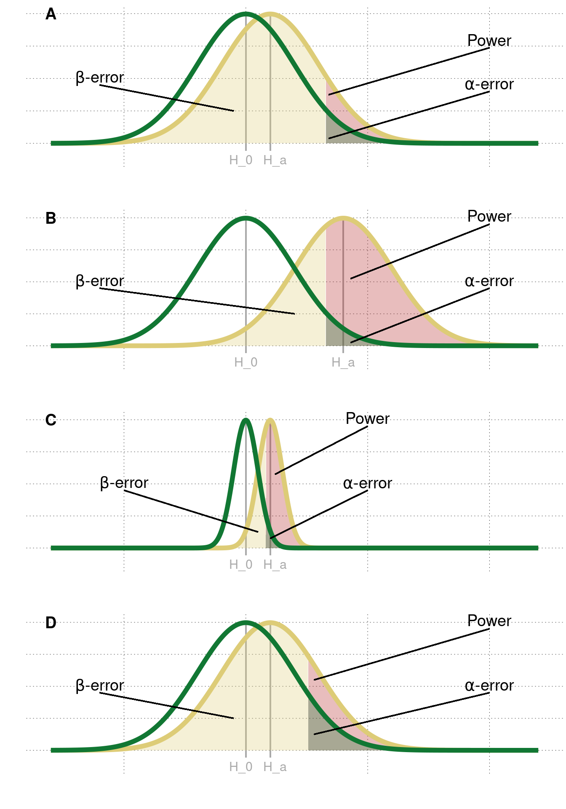

Statements e. and g. are correct.
E.2 Possible remedies
The intertwined connections between contributing factors show how quickly the reproducibility and replicability of a study can be compromised. In order to safeguard research integrity, it is therefore necessary that many factors are addressed. Over the past years, the severity of the consequences of irreplicable research has spawned many solution attempts. The following provides an overview of the most effective measures so far.
E.2.1 Improve scientific rigor
E.2.1.1 Preregistration
A preregistration is a protocolled research plan prior to data collection – including hypotheses, methodology, research design, and statistical analyses. With this commitment, researcher degrees of freedom are drastically constrained, so that (sub)conscious engagement in QRP’s like \(p\)-hacking or HARKing is limited. Such practices are limited because preregistered studies draw a clear line between exploratory and confirmatory analyses. The confirmatory analyses regarding the prespecified hypothesis (i.e., the prediction) are protocolled in advance so that exploring the data and then selectively reporting is not possible without being detectable.
Some may perceive preregistrations as a limitation on “scientific creativity”. However, preregistrations are not intended to deter researchers from exploring their data. Examining the data is the core of generating new hypotheses for further confirmatory analyses, which is ultimately vital for scientific progress. Nevertheless, to counteract a potential inflation of false-positive rates, any \(p\)-values calculated by a test deceived after data inspection need to be marked as post hoc.
You do not need to write a preregistration from scratch. In fact, websites such as the Open Science Framework (OSF) or AsPredicted offer useful templates, only needed to be filled out as detailed as possible. Below is a list of what your preregistration should ideally include. For more information on each point listed, please take a look at the preregistration template provided by the OSF.
Study information: title, authors, description (optional), hypotheses
Design plan: study type, blinding, study design, randomization (optional)
Sampling plan: existing data, explanation of existing data (optional), data collection procedures, sample size, sample size rationale (optional), stopping rule (optional)
Analysis plan: statistical models, transformations (optional), inference criteria (optional), data exclusion (optional), missing data (optional), exploratory analyses (optional)
E.2.1.2 Know your stats
1. Learn more about statistical frameworks
A good departure point for increasing research quality is to learn more about statistical frameworks, such as Null Hypothesis Significance Testing. A common misinterpreted and misused concept in NHST is the \(p\)-value itself. Therefore, when adopting a frequentist approach to hypothesis testing, it is important to intensively engage with the purpose and interpretation of the \(p\)-value. In the exercise box below (repeated with minor changes from before), you can test your knowledge about it. Please re-visit Chapter 16.2 if you feel like brushing up on the topic.
Self-test on \(p\)-values
Which statement(s) about \(p\)-values is/are true? The \(p\)-value is…
- …the probability that the null hypothesis \(H_0\) is true.
- …the probability that the alternative hypothesis \(H_a\) is true.
- …the probability, derived from the assumption that \(H_0\) is true, of obtaining an outcome for the chosen test statistic that is the exact same as the observed outcome.
- …a measure of evidence in favor of \(H_0\).
- …the probability, derived from the assumption that \(H_0\) is true, of obtaining an outcome for the chosen test statistic that is the same as the observed outcome or more extreme towards \(H_a\).
- …the probability of a Type-I error.
- …a measure of evidence against \(H_0\).
Another statistical framework worth considering is a Bayesian approach to hypothesis testing. Unlike frequentist statistics, Bayesian data analysis does not bake in binary decision routines, such as to reject or not to reject a given null hypothesis. Instead, evidence is quantified. Assigning less importance to a single value that decides whether a study is published or not might reduce the pressure to pass the threshold at all costs. Moreover, Bayesian statistics provide a broader spectrum for drawing conclusions from the results. The posterior tells us how probable a hypothesis is given the data, \(P(H|D)\). In contrast, frequentist hypothesis testing gives the probability of the observed data or more extreme data (denoted by the asterisk) if the null hypothesis were true, \(P(D^*|H_0)\). This not only lacks information about the correctness of the alternative hypothesis (which is often the research question) but also that of the null hypothesis itself. While a non-significant \(p\)-value is no go-ahead for accepting \(H_0\), Bayes factors can in fact give evidence in favor of \(H_0\) by comparing both hypotheses in light of the data.
2. Control for the error rate
The most obvious way to reduce the probability of a false-positive is to lower the significance threshold. Indeed, many researchers argue that a 1 in 20 chance of obtaining a false-positive is too high and call for lowering the conventional \(\alpha\) threshold from 0.05 to 0.005 (Benjamin et al. 2017). This call sparked a hot debate in the scientific community. Lakens et al. (2018) argue that switching to a lower threshold might even have negative consequences on the feasibility of replication studies. Researchers should instead justify the choice of the threshold individually. Further resources on the “\(\alpha\)-debate” are linked in Chapter E.4.
Regardless of whether you agree with “Team Redefine \(\alpha\)” or not, it is crucial to further correct the threshold if at least two analyses were conducted on the same data set. Probably the simplest and most conservative method to adjust the family-wise error rate to 0.05 is to use a Bonferroni correction, where the per-contrast \(\alpha\)-level is divided by the number \(n\) of tests on the same data set. In the fishy jelly bean study from the previous chapter, the researchers could have corrected the error rate as follows:
\[ \alpha_{corrected} = \frac{\alpha}{n} = \frac{0.05}{20} = 0.0025 \]
This new cut-off point at 0.0025 ensures an upper bound of 5% for a false-positive result despite multiple testing:
\[ \alpha_{FWER} = 1-(1-0.0025)^{20} \approx 0.049 \]
So, in order to claim a statistically significant link between acne and the jelly bean flavor at hand, the \(p\)-value in this particular test has to be smaller than 0.0025.
3. Increase statistical power
Power is mainly improved by increasing the underlying effect size, decreasing the standard deviation, increasing the \(\alpha\)-level, and increasing the sample size (see figure E.2). However, not all factors are feasible, practical, or common. The true effect size is unknown in reality and needs to be estimated when calculating the power. Since it is not influenceable, the true effect size is as big as it gets. The standard deviation can theoretically be reduced (e.g., by controlling for measurement error), but only up to a point. A higher demarcation point for statistical significance simultaneously entails a higher risk of making a false discovery and is thus not desirable at all.
This leaves us with the sample size. Intuitively put, increasing the number of observations in the sample will provide more information about the population we want to generalize to (think Law of Large Numbers). 100 CogSci students are more representative of the whole CogSci population than only 25 students. Therefore, the more data we collect, the likelier we get to the true average IQ. Concretely, a larger sample size will decrease the standard error of the mean (SEM), which is the standard deviation of the sample means. With a smaller standard error, smaller effect sizes are detectable.
The minimum required sample size to detect a given effect size is often calculated with a so-called power analysis (see Section 16.4). If the power analysis yields a sample size estimate that is difficult to realize, it may be an indicator that the effect size is so minor that the study could even not be worth the effort. If authors still want to conduct their studies, inviting many more participants and thereby prolonging the experiment can conflict with time and financial limitations. According to the motto “where there’s a will, there’s a way”, authors can team up with other labs to achieve the calculated sample size.
Useful resources and software for power analyses are linked in Chapter E.4.

Figure E.2: Factors that affect the power of a study. A| An example of low statistical power. B| A larger effect size makes differences easier to detect. C| Less variability in the groups makes smaller differences detectable. D| A higher \(\alpha\)-level increases the probability of rejecting \(H_0\).
4. Correlation \(\neq\) Causation
As already outlined in Chapter 5.3, a positive or negative correlation must not be interpreted as a causal relationship between two measurements \(A\) and \(B\). In fact, there can also be a third variable \(C\) that caused both \(A\) and \(B\). Let’s illustrate erroneous conflation of correlation and causation with an example. It is known that a rapid drop in barometric pressure (\(A\)) is followed by stormy weather (\(B\)). This co-occurrence, however, cannot be interpreted as \(A\) causing \(B\), i.e., the barometric pressure causing a storm. Rather, there is a third factor \(C\), that causes both the drop in barometric pressure and stormy weather, namely the falling air pressure that precedes both events.
An observed correlation between two measurements, attributed to either a third (confounding) variable or to random chance, is called a spurious relationship or spurious correlation. Note that spurious correlations are often not readily identifiable, which is why we never can surely speak of causation. This realization is important to keep in mind when interpreting the results of a study.
E.2.2 Realigning incentive structures
E.2.2.1 Registered Reports
A Registered Report (RR) is a preregistration that is integrated into the publication process. Here, peer review splits into two stages: one before data collection and one after conducting the experiment. Initially, the manuscript is triaged by an editorial team for rigor, feasibility, and suitability of the research proposal. If approved, the manuscript passes to the first stage of peer review, where the study design, methods, and proposed analyses are assessed in more depth. In addition to other methodological aspects, reviewers assess if proposed studies are adequately powered, requiring the a priori statistical power to be at least 90%. In the first stage, peer reviewers preliminary accept the submitted manuscript, ask the researchers to revise or reject it right away. If the manuscript passes the first stage, it is “in principle accepted” (IPA) and guaranteed to be published – irrespective of the results. After data collection and analyses, the manuscript is completed with the results section and discussion and then submitted to stage two peer review. To be admissible, authors are often required to make their anonymized raw data and study materials publicly available and provide a link within the stage two manuscript. In this last stage, the adherence to the manuscript approved in stage one is assessed. If the results are reported thoroughly, and potential deviations from the IPA report are justified and transparent, the paper is published.
Registered Reports eliminate publication bias. By accepting the manuscript in stage one of peer review, the respective journal guarantees the publication of the study, irrespective of whether the outcomes are null results or significant. With results-blind peer review, fewer papers with non-significant results should land in the file drawers102 and instead be added to the scientific literature. By eliminating publication bias, Registered Reports aim to take off the pressure from researchers to chase significant \(p\)-values and shift the focus to valuing good quality research that complies with the hypothetico-deductive model of the scientific method.
Two recent studies suggest that Registered Reports are indeed effective in realigning incentive structures. Scheel, Schijen, and Lakens (2020) found that 56% of the Registered Reports did not yield statistically significant results. In a study by Allen and Mehler (2019), the percentage was even higher. The results vary tremendously from the authors’ estimation of 5%-20% of null results in traditional literature. If many journals and authors promote this publication format, it is conceivable that the skewed incentive structure can be normalized entirely. Indeed, the number of journals offering Registered Reports is increasing exponentially. What started with three journals in 2013 – with Cortex as the first journal to implement them – has been steadily growing ever since, with currently 273 participating journals at the time of writing (end of 2020).
With realigning incentive structures, it may be reasonable that also a journal’s prestige is evaluated differently. Instead of depending on citations, a journal’s impact could be assessed on how much it promotes open science practices (see TOP Factor) and replicable research (see Replicability-Index).
E.2.2.2 Replication initiatives
Direct replications are the cornerstone of science. They assure the validity and credibility of scientific discoveries on which further research can build upon. However, a neophiliac incentive system makes this scrutiny unlikely to be published and may lead researchers to see no sense in attempting direct replications of previous findings. Here are two solution attempts journals may adopt to stop neophilia in favor of preserving psychology’s “self-correcting system”:
1. Pottery Barn Rule
The “Pottery Barn Rule” is a solution attempt proposed by psychologist Sanjay Srivastava (2012). According to the motto “you break it, you buy it”, he proposes that once a journal has published a study, it should also be accountable to publish direct replications of the findings. Importantly, this commitment also includes failed replications and replication attempts despite a flawed methodology of the original study. An example of the implementation of such a concept is the Psychology and Neuroscience Section of Royal Society Open Science.
2. Registered Replication Reports
A Registered Replication Report (RRR) is a publication format that is entirely dedicated to direct replications. It consists of multi-lab direct replication studies that aim to precisely estimate effect sizes in studies whose results are highly influential in their field or attracted media attention. The Association for Psychological Science (APS) is the first organization to implement and encourage this extension of classic Registered Reports.
E.2.3 Promote transparency
E.2.3.1 Open Science Badges
To provide an incentive for open science practices, more and more journals are adopting badges. By sharing data, providing materials, or preregistering, the authors “earn” the corresponding badge, which will be depicted in the respective article. The three types of badges are shown in figure E.3.

Figure E.3: Badges to incentivize preregistration, as well as data and material sharing.
This simple solution already shows initial indications of a positive impact. Kidwell et al. (2016) found that implementing badges increases data and material sharing. Although the authors did not include the impact of the preregistration badge in their assessment, it is conceivable that the possibility of earning the badge will result in more preregistrations – or at least awareness of their existence.
E.2.3.2 TOP Guidelines
The Transparency and Openness Promotion Guidelines comprise open science standards for eight categories. Journals that promote open science practices can implement one or more guidelines into their policy, thereby choosing the level of stringency. For example, if a journal adopts level III (the most stringent level) of the “Data” standard, it requires authors to make their data retrievable for readers. In addition, the journal undertakes to independently reproduce the results before publishing the paper.
A full list of the TOP Guidelines can be found on the website of the Center for Open Science.
E.2.3.3 Disclosure statements
Sometimes it doesn’t need much to cause a great effect. In fact, it can only take 21 words to enhance integrity in research papers:
We report how we determined our sample size, all data exclusions (if any), all manipulations, and all measures in the study.
This 21-word solution by Simmons, Nelson, and Simonsohn (2012) requests from researchers to honestly report everything in order to render this statement true. For example, if there were data exclusions in a reaction time study, the disclosure statement could be supplemented with a sentence like: “We excluded every individual trial faster than 100 ms and slower than 1500 ms.”
If such disclosure statements were the norm or mandatory, authors who want to conceal details of data collection and analysis would have to actually lie about their disclosure. And deliberate lying probably exceeds the “grey area” in research.
Excursion: Improve usability
Sharing analysis scripts and (raw) data is certainly a good starting point to facilitate replication efforts. However, it is also important to ensure that code and data are correctly interpreted by the reader. The following three best practices will help improve the usability of your files.
Add a README file. A README file is usually the first place to go when exploring a project repository (e.g., on OSF or GitHub). Ideally, it should give methodological information, a walkthrough on the files and the folder structure of the project, and contact information (especially the full name and a permanent email address). It is also useful to document the software (preferably open source), versioning, and packages needed for analysis.
Provide metadata. Metadata, that is, “data about data”, refers to structural, descriptive, or administrative properties of the gathered data. It gives, to name a few, information about who collected the data, the time period, and the location of data collection. Furthermore, it refers to the actual content of the data, e.g., what the column names mean and what types of measurements are stored. A detailed description of all measured variables is also called a “Codebook”.
Comment your code. Reading into someone else’s code is hard enough. It gets more time and nerve consuming if the code is also not supplemented with proper comments. Let the reader know what your code does by providing useful comments and descriptive variable names. This also has the benefit that you have a better understanding of the analysis script when you come back to it at a later point in time.
References
Allen, Christopher, and David M. A. Mehler. 2019. “Open Science Challenges, Benefits and Tips in Early Career and Beyond.” PLoS Biol 17 (5): e3000246. https://doi.org/10.1371/journal.pbio.3000246.
Benjamin, Daniel J., James O. Berger, Magnus Johannesson, and others. 2017. “Redefine Statistical Significance.” Nat Hum Behav 2: 6–10. https://doi.org/10.1038/s41562-017-0189-z.
Kidwell, Mallory C., Ljiljana B. Lazarević, Erica Baranski, Tom E. Hardwicke, Sarah Piechowski, Lina-Sophie Falkenberg, and others. 2016. “Badges to Acknowledge Open Practices: A Simple, Low-Cost, Effective Method for Increasing Transparency.” PLoS Biology 14 (5): e1002456. https://doi.org/10.1371/journal.pbio.1002456.
Lakens, Daniël, Frederico G. Adolfi, Casper J. Albers, and others. 2018. “Justify Your Alpha.” Nat Hum Behav 2: 168–71. https://doi.org/10.1038/s41562-018-0311-x.
Scheel, Anne M., Mitchell Schijen, and Daniël Lakens. 2020. “An Excess of Positive Results: Comparing the Standard Psychology Literature with Registered Reports.” https://doi.org/10.31234/osf.io/p6e9c.
Simmons, Joseph P., Leif D. Nelson, and Uri Simonsohn. 2012. “A 21 Word Solution.” Dialogue: The Official Newsletter of the Society for Personality and Social Psychology 26 (2): 4–7. https://doi.org/10.2139/ssrn.2160588.
Srivastava, Sanjay. 2012. “A Pottery Barn rule for scientific journals.” 27, 2012. https://thehardestscience.com/2012/09/27/a-pottery-barn-rule-for-scientific-journals/.
This is a reference to the “file drawer problem”, a term coined in the late seventies. It aptly describes publication bias to the effect that researchers lock non-significant studies away in their file drawers, knowing that there is no prospect of ever being published and thus seen and acknowledged by the scientific community.↩